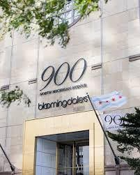

About Dr. Stacie McClane
Dr. Stacie McClane is a board certified surgeon specializing in Facial Plastic and Reconstructive Surgery. She has extensive training in cosmetic and reconstructive facial procedures.
Locations
Chicago

60 E. Delaware
Suite 1412
Chicago, IL 60611
Hoffman Estates

1555 Barrington Rd
Doctors Office Building Three
Suite 3400
Hoffman Estates, IL 60169
Tel: 312.867.9500
Fax: 312.674.7501
 Dr. McClane's patients find her caring, straightforward, and compassionate. She spends time with her patients with consultation and video imaging to truly understand their goals. Please read some of our patient testimonials in the "Patient Testimonial Section."
Dr. McClane's patients find her caring, straightforward, and compassionate. She spends time with her patients with consultation and video imaging to truly understand their goals. Please read some of our patient testimonials in the "Patient Testimonial Section."
Her philosophy is simple. She provides outstanding results. The following quote captures her spirit. "I want to create a natural look, to rejuvenate my patients' appearance, restoring their youthful image, and making them look as alive and active as they feel."
The following is Dr. McClane's curriculum vitae (resume). Please review this to learn more about her extensive training, honors, and publications.
download PDF version curriculum vitae
| EDUCATION: | Facial Plastic and Reconstructive Surgery Fellow 2001-2002 Otolaryngology-Head and Neck Surgery Resident 1997-2001 General Surgery Resident 1996-1997 Doctor of Medicine, May 12,1996 Bachelor of Arts, Magna Cum Laude , May 23,1992 |
| HONORS AND AWARDS: | 1999 Resident Research Grant Recipient Alpha Omega Alpha |
| CERTIFICATION: | American Board of Facial Plastic and Reconstructive Surgery American Board of Otolaryngology-Head and Neck Surgery Basic Life Support |
| ACTIVITIES : | Committee Member Residency Liaison Clinical Instructor Assistant Mentor Teaching Assistant Secretary Health Awareness Workshop Leader, 1993 Director Volunteer |
PROFESSIONAL SOCIETY MEMBERSHIPS: |
American Academy of Facial Plastic and Reconstructive Surgery American College of Surgeons American Academy of Otolaryngology-Head and Neck Surgery American Medical Association Chicago Laryngological & Otological Society |
| RESEARCH: | McClane, Stacie, M.D.; Mangat, Devinder, M.D.; Yunker, Martha, C.R.N.A. The Use of Perioperative Clonidine To Reduce Postoperative Facelift Hematomas. Fellowship Research Project McClane, Stacie, M.D.; Mangat, Devinder, M. D. Oral Presentation. 8 th International Symposium of Facial Plastic and Reconstructive Surgery, New York , May 2002. McClane, Stacie, M.D.; Renner, Gregory, M.D. 1999 American Academy of Facial Plastic and Reconstructive Surgery Resident Research Award Grant Oral Presentation. Combined Otolaryngological Spring Meetings, May 2000. Archives of Facial Plastic Surgery , published May 2002. McClane, Stacie, M.D.; Renner, Gregory, M.D. Oral Presentation. Annual Meeting, American Academy of Otolaryngology Head and Neck Surgery, September 1999 Otolaryngology Head and Neck Surgery, published October 2000 Haro, Julian, M.D.; McClane, Stacie, M.D. Poster, American Pain Society Annual Scientific Meeting Bumpous, Jeffrey, M.D.; McClane,. Stacie, MD Ganzel, Toni, M.D.; McClane, Stacie, M.D. |
| CONTINUINING MEDICAL EDUCATION: |
Aesthetic MD Conference Mesotherapy and Lipodissolve Training Scottsdale Arizona November 17-18 2006 Rejuvenation of the Aging Face 8th International Symposium of Facial Plastic 9th Annual Winter Symposium on the Latest Combined Otolaryngologcial Spring Meetings American Academy of Facial Plastic And American Academy of Facial Plastic and Reconstructive Surgery, Fall Meeting Soft Tissue Technique Course Plating Course |
| HOSPITAL PRIVLIGES: | Lincoln Park Hospital River North Center Plastic Surgery Center |
| INTERESTS: | Jogging, Scuba Diving, Traveling, and Skiing |